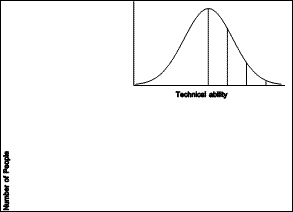
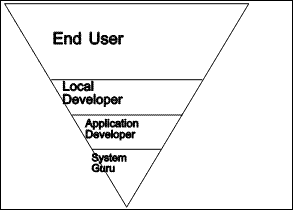
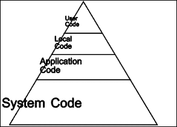
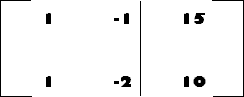
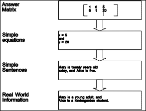

Chapter 1: Introduction
From the earliest times, people have distinguished themselves from other life forms as users and makers of tools. Today, with the specialization our economy encourages, the vast majority of people tend to be tool users or tool shapers, rather than tool makers or tool reshapers. In so far as our tools are physical artifacts, this is understandable, for tool making or reshaping require the use of special skills, special tools, and physical effort. Standing in opposition to such hardware artifacts is the new technology of software.
The work described here is concerned with the problem of enabling people to become tool makers, or at least tool reshapers, for there is a "parallel between programming a computer and using a tool [and] interactive computing should [include] having the end-user be able to reshape the tool" (Kay, 1993a, emphasis in original).
2.1 Social Needs and Computing
This way of looking at computers, often called end user computing, "should make users masters of their systems" (Eriksson, 1990). This perspective on the way people ought to approach computing is not new (Kay, 1969; Papert & Solomon, 1972). Over twenty years later, computing power is now readily available, in amounts almost unthinkable then, yet it is still under used by the vast majority of individuals. "Today... we don't have 'end-user programming'" (Kay, 1993a). This is because "programming tools continue to fall short of users' imaginations and to exceed their capabilities" (Juneau, 1992). A recent book on end user computing (Kearsley, 1994) is subtitled Bringing Computer Power to the People, but it addresses only the use of computer technology, not its reshaping by the users.
Technology represents one kind of knowledge. In Aristotle's classification of knowledge, the practical skills (téchne) stand in contrast to "practical wisdom (phronesis), [and] scientific knowledge (epistéme)" (Eriksson, 1990). With technology, people produce artifacts, including tools, to be used either in their own right, or to produce further artifacts. This is where the value of technology lies: "outside itself in the product" (Eriksson, 1990).
Computing technology does not stand alone, for "technology is only one element in a complex cultural ecology that involves ideology and institutional practices as well" (Ulmer, 1989). Technology is produced and evolves to meet social needs. Ulmer (1989) argues that those who study communication should meet such a new communications technology with "a kind of thinking that is more 'euretic' (concerned with invention and making) than hermeneutic" (having to do with interpreting or analyzing). Rather than passively analyzing the new medium, communications experts ought to get involved with its shaping and creation. At the very least, they ought to consider using the new technology in their work.
Computer scientists have not suffered from this form of indifference. It is a commonplace that computer scientists use computers to do their work. What we, as computer scientists, have had more difficulty doing is giving computational power to the masses. We welcome into our ranks those who are willing to learn enough to join us, but expend relatively little effort reaching out.
Powerful personal computer systems are now readily available. Costs have decreased to the point that this technology is accessible or could be made accessible to nearly every individual in the world, even in less developed areas (Schware & Choudhury, 1988). As powerful computers become even more readily available, the need for specialized computer software continues to increase. Thus, the creation of computer programs for specific purposes is a human endeavor of increasing importance. Yet, the activity which accompanies this creative effort remains a highly technical one, and relatively few people are sufficiently trained to accomplish it. When we consider the increasing need for specialized computer software together with the scarcity of people trained to produce it, it is not surprising that we are experiencing a software crisis. In this thesis we propose attacking the problem by simplifying the work of creating a particular kind of computer software, thus increasing the number of people who can produce it.
2.1.1 Case studies
In this section, I will tell some stories about real people having real needs which could be met by computer technology. This is presented as anecdotal evidence that the need for end user computing, and in particular, end user programming, is very real.
The first two examples come from the first sector of the economy, and involve activities dating from the first wave (Toffler, 1990) of human civilization: hunting and farming. The third example involves another ancient invention, that of writing, by analogy to literacy (Kay, 1993a), and describes the author's experience with teaching ordinary people to become computer literate. The final example is squarely from the modern information age, involving research in recombinant genetics.
2.1.1.1 Recording the hunt
As an officer of the Game and Fish Department of the State of Arizona, one of Ron Olding's responsibilities is to track the harvest of mule and white-tail deer in the state, during the annual deer hunting season. Ron purchased a popular microcomputer database management system, and spent some time attempting to set up a database to record, for each kill, the information about the time and place, the hunter, and the hunted. The information thus collected would be subjected to statistical analyses, and, combined with census and other information, become the basis of official policy for future seasons.
Despite years of training in the sciences and a master's degree in biology, Ron found himself frustrated by the task of using this off-the-shelf software, which the industry represents to be an end user tool. In the end, he hired a consultant to produce a custom application using the software.
2.1.1.2 Tilling the ground
For months before planting time, LeRon Torrie, of Grassy Lake, on the prairies of southern Alberta, works at his farm computer running simulations and projections of the next year's possible crops. Though he considers himself to be an agribusinessman, involved in the primary production of grain and oil seeds, most of us would call him a farmer. He works 1000 acres of irrigated land and 800 acres of dryland, and, surprisingly enough, considers that "his farm computer is the most valuable piece of farm equipment he owns" (Grainews, 1990).
It wasn't always so. As a student, completing his bachelor's degree in Agricultural Economics, he had used planning software that ran on the university's mainframe computer. When personal computers became widely available in the early eighties, he purchased one and began teaching himself to use it. Unable "to find any outstanding software, [he] developed his own" (Grainews, 1990) using a spreadsheet program, starting with VisiCalc (Levy, 1984; Beyer & Holtzblatt, 1994).
Ten years and some 2000 hours later, he has "a big model of [his] farm built into [a] Lotus" 1-2-3 spreadsheet (Grainews, 1990). During these same ten years, his wheat yields have increased from 60-70 bushels to over 100 bushels per acre. He attributes his increase in productivity mainly to the computer and pivot irrigation systems. Other factors include the precision with which farming operations, such as sowing seed, can be carried out, and the use of genetically-engineered seed (Torrie, 1995).
By summarizing the data he collects each year, he can "know which crop did the best ... and by how much. That information becomes the starting point for the next year's projections" (quoted in Funk, 1990). Not content to simply use his programming work in his own operation, he set out to share his knowledge: "I have invited many farmers into my home office and have shown them the system's value in planning, budgeting, creditor relations, accounting and a host of other useful functions. About half of them now have systems of their own" (Grainews, 1990).
He found that a spreadsheet based application does have some disadvantages. Farmers had to purchase the spreadsheet program itself, then learn its menu structure. And, even with protected fields, they could accidentally modify it where they shouldn't. So LeRon spent another three months and hundreds of hours to create a "compiled, bullet-proof version" (Torrie, 1995). This program is now in use by some twenty-five other farmers, in the same general area, and engaged in the same type of business.
2.1.1.3 Computer literacy
In the 1980's I taught computer literacy and introductory computer programming to numerous groups, ranging from children through university students to adults from many walks of life. Literacy courses involved introductions to word processing, spreadsheets, and database management systems. Programming languages used included a spreadsheet language (Levy, 1984), LOGO (Papert, 1980), and several dialects of BASIC.
The major finding was that while a small percentage of the students ended up being not interested, the vast majority learned to use computers to various degrees, and another small percentage actually became programmers. Both children and their school teachers seemed quite comfortable with LOGO programming, though all but a very few had considerable trouble with examples involving recursion.
One student, Joe Stevenson, was a school principal in Stirling, Alberta. Not only did he excel in a BASIC programming course, but he went on to design and build a comprehensive computer system for his school. It helped track attendance, prepare report cards, schedule parent-teacher nights, and produced all of the printed reports required by the provincial government. Joe had some success selling the system to his colleagues.
BASIC turned out to be an effective programming language for Joe. It did not exceed his capabilities, although at times it did fall short. Joe worked in the way described by Nardi (1993), in a kind "of collaborative programming in which the user successively refines [his] idea of what [he] wants in the application, working both independently and with a programmer when [he] has reached the limits of [his] abilities." As an experienced machine language programmer, I provided small bits of code to obtain the names of the files on a diskette (Conrad, 1984), to perform partial garbage collection (avoiding intrusive full collections), and to add RAM disk capability. These contributions represented less than one percent of the work, but were essential to create a professional quality application.
2.1.1.4 Genetic research
David W. Mount is an internationally known microbiologist, with whom I had some discussions in the mid-seventies. The data available to a geneticist is massive in quantity, yet relatively simple in structure. A strand of DNA is a sequence of base pairs chosen from an alphabet of four possibilities (customarily denoted A, C, G, and T or U). We noted that two bits would be sufficient to encode a base pair choice, and talked about the data compression this could give in the representation of DNA sequences.
A few years later, David had acquired an early microcomputer for his laboratory at the University of Arizona, and we were able to collaborate for a few months. During this time, we produced a suite of C programs that could analyze DNA in various ways which had previously been available only on large computers (Conrad & Mount, 1982).
Also during this time, David became a proficient C programmer (and I did not become a proficient microbiologist). Our later collaboration was of the kind described by Nardi (1993), in which I assisted him when he "reached the limits of [his] abilities." He continued to expand the suite of programs for several years (Mount & Conrad, 1984a; Mount & Conrad, 1984b; Mount & Conrad, 1986), and collaborated with other computer scientists (Mount & Myers, 1986) in a pursuit of more efficient algorithms. The suite of programs was used by many researchers around the world.
2.1.2 The Programming Bottleneck
The case studies of the previous section have provided evidence that many people in the world, who are not professional, trained, computer programmers can program computers themselves under the right circumstances.
Given sufficient motivation, and a computer programming language adapted to their needs, many people who are not programmers can nevertheless apply computational power to their tasks. The work described in this thesis is part of a larger research community whose goal is "to encourage the proliferation of end user programming environments that will give ordinary users some of the computational power enjoyed by professional programmers, so that they can perform their work more efficiently, effectively, and pleasurably" (Nardi, 1993).
2.2 Programming as a natural human activity
"In everyday life, people learn and use a wide variety of formal language systems. These systems are so pervasive that we scarcely stop to notice them..." Nardi (1993) goes on to list numerous examples, and give a detailed analysis of some of these formal languages and notations. One of her key insights is that "end users are not simply underskilled programmers who need assistance learning the complexities of programming. Rather, they are not programmers at all."
In this section, we will argue that programming is actually a natural human activity. Certainly end users should be spared many of the complexities of programming, rather than trained to work around them. Given the right kind of task-specific programming languages, people can transfer their natural programming skills into the computer domain.
2.2.1 Programming vs. Performance
Performance involves controlling events as they unfold. Programming involves the predetermining of events before they unfold. The three fundamental operations in computer programming--sequence, selection, and iteration--have their counterparts from this perspective of programming. Sequence is determining the order in which events should occur, identifying which events must occur before or after which other events. Selection is allowing for variations in the conditions under which events might unfold. Iteration is the recognition of similarity in events as time passes: similar events occur in cycles, with each cycle occurring during the passage of time.
As an example of performance compared to programming, consider the thrust characteristics of rocket motors. In a liquid fuel engine, thrust is controlled as time passes. A control action is taken and is quickly followed by a corresponding change in thrust. In a solid fuel motor, however, thrust over time is predetermined by the shape of the cavity within the fuel. In effect, the thrust curve over time was programmed when the fuel was shaped.
As another example, consider page numbering. A secretary typing Page 1 at the top of the first page, and so on, is performing. One who uses a word processor's page header to number the pages is programming. Going through a finished document inserting page breaks to control the layout is a performance; using conditional page breaks is a form of programming.
2.2.2 Programming by Example
People commonly learn by copying the actions of others. There is an active research community attempting to program computers to learn in a similar way (Cypher, 1993). The basic idea is that a human user of the computer performs a sequence of actions. The programmed device then reproduces the same sequence at a later time. This tends not to produce robust programs, as many of the actions taken by the human instructor are contingent on certain conditions of which the machine, and possibly even the human, may not be aware.
Consider a robot programmed to paint car bodies in an automobile factory. One class of robots is programmed by having a human specialist perform the operation of painting a piece of sheet metal while the robot senses the sequence of positions of its various joints. Suppose, now, that the paint nozzle sputters and the operator, noting this event, repaints the affected area. Then, during the robot's future performance, it would repaint the corresponding area, even though the nozzle doesn't sputter (wasting paint, in an error of type one), and wouldn't repaint other areas when the nozzle did sputter (performing poorly, in an error of type two).
2.2.3 Programmed people
Under normal conditions, we don't consider people to be programmed. This is because we have great expectations about their ability to perform under unexpected conditions. Our instructions are typically much more declarative in nature than those given to computers. For example, we might ask a mechanic for a safety inspection, with the expectation that they will perform a standard set of activities. At other times, our programming is expressed as a problem to be diagnosed, then repaired.
With people, what we call exceptional conditions in a computer program, are the norm. We expect that the person performing on our behalf will notify us and ask necessary questions when unexpected circumstances occur during their performance. We expect that some effort will be made to locate us, if necessary, or that some creative means will be devised to deal with the unexpected problem.
Programming with people is a dialogue engaged until agreement is reached. The person who will be performing considers our instructions, plays them out mentally, predicting outcomes, visualizing results and processes, and making request for provisional instructions. For example, the mechanic, upon being asked to perform a safety inspection, may ask "if your brakes need relining, should we go ahead with it, or call first?"
2.2.4 Conclusion
Programming, as giving (and receiving) instructions for a future performance, is a basic human activity. We understand the world in order to predict future conditions and decide in advance how to control the world to meet our goals. We have an important ability, not shared by computers currently, to simulate or pre-live certain events mentally, to plan ahead. Furthermore, when unexpected event occur, or situations change, we can revisit and revise our programming.
2.2.5 The Fundamental Theorem of Computing
The early Twentieth Century work of mathematicians such as Gödel, Church, and Turing on the theory of computation (Davis & Weyuker, 1983) led to what might be called the fundamental theorem of computing: programs are data. A program is nothing more than a finite sequence of instructions, and this sequence can be encoded as a sequence of numbers, indeed, as a single number.
Any computation which is possible can be accomplished by a device (not a physical device, but a mathematical construct) called a Turing Machine. It has been shown that there are a countably infinite number of possible Turing Machines: that is, the possible Turing Machines can be placed in one-to-one correspondence with the natural numbers. A particular Turing Machine takes some input data, performs the computation peculiar to it, and produces other data as output.
Alan Turing showed that one of these machines, called the Universal Turing Machine, has the peculiar property of being able to simulate the action of any particular Turing Machine. A part of its input data describes a particular Turing machine which is to act upon the remainder of the data. The Universal Turing Machine interprets that part of its input data as instructions, and then behaves as if it were that particular Turing Machine on the remainder of the data.
This explains more fully what is meant by the fundamental theorem of computing: a program is data which, when interpreted by some device, causes that device to carry out a particular computation.
2.2.5.1 Finding the program: creation or selection
A computer program can be viewed from different perspectives: as a technical achievement, a work of art, or the result of selecting one of the possible Turing Machines. The first two are commonplace, since we speak of software engineering, and many recognize programming as a being more of a craft, or black art, than a science. But the third alternative deserves some explanation.
Since each possible Turing Machine has a unique number, coming up with the right program for a particular computation can be thought of as selecting the correct number, and then identifying the program specified by the Turing Machine with that number.
This may seem overly simplistic, for when we are asked to "pick a number", we generally choose a small one, in some range of interest, such as the interval one to ten. Conceptually, however, if we are really looking for a number chosen arbitrarily from the set of natural numbers, we should not be surprised if the number chosen were so large that it would take more than a human lifetime to write down the digits of that number. After all, the vast majority of the natural numbers are much larger than we can imagine: there are infinitely many of them, each one larger than the one before it.
Selecting the right Turing Machine by selecting a natural number looks like a very difficult way to go about it. So, it is more reasonable to consider a piece of software to be created, rather than discovered.
2.2.5.2 The programmer creates the program
The creation of a program requires skills of abstraction, simulation, attention to detail, and others. It is the preparation of instructions for a mindless machine, instructions to cover every contingency which might arise. What kind of preparation must a person bring to this task? Early computers could be programmed only by mathematicians. With the introduction of high level languages such as FORTRAN and COBOL, the programming task was introduced to many more people. This trend has continued. More recently, languages and programming systems such as BASIC, Hypercard, and spreadsheets extended the range still further.
High level languages and modern programming systems have not changed the nature of computation. That is, they have not extended the notion of what is computable, by allowing the expression of computations which could not be performed by a Turing Machine. Rather, these programming languages and systems are like the Universal Turing Machine, with a twist: they allow the expression of a computation in a language accessible to non-mathematicians. And, as the Universal Turing Machine is itself a kind of Turing Machine, so these languages and systems are themselves computer software, commonly called system software.
The development of system software requires a high degree of skill, and relatively few people are prepared to participate in this activity. Good system software facilitates the creation of specific computer applications by a larger group of people. Combined, these two groups of people comprise the computer programmers of the world, still a very small minority of the world's population.
2.2.5.3 Identifying the programmer
Much of what we do as computer scientists is more mathematics, art, and engineering than it is science. Rather than searching for rules that allow us to describe, predict, and control the real world around us, we spend most of our time creating artificial worlds. Sometimes, faced with an artificial world created by other computer scientists (say, at Intel or Microsoft), we do adopt the scientific method as we try to understand the rules which will allow us to describe, predict, and control that world. But, most of our time is spent creating new artificial worlds on top of old ones.
As we begin the creative process, we take some starting point for granted. This may be a particular hardware platform, or it may be a particular operating system platform. The term platform is appropriate, for once having understood the rules by which the platform can be described, predicted, and controlled, we begin to build upon it. That which we build, though from our perspective a work of our creation, is, from the perspective of its users, also a platform. The users of the work we have created will view that work as a platform, and they will seek to understand the rules by which that platform can be described, predicted, and controlled. Then they will begin to build their own creations upon it.
At some point, this progression ends. We speak then of end users. The creations which these people build upon this final platform are not platforms for future building, but end products of their work (such as documents, presentations, reports, etc.). However, these end users still need to understand the rules by which the final platform can be described, predicted, and controlled.
When the final platform includes macro capabilities, end users will often use these to create shortcuts which increase their productivity by extending the platform. The end user may both create and use such macros, or they may share them with other end users. When this sharing occurs, the end user has become a programmer, at least to some degree. That is, they have created a new platform on top of the old. We call such people local developers (Gantt & Nardi, 1992), because their work is typically used by fellow workers at a given site. However, they may refine their creations and market them more widely.
The computer industry calls the platforms that are shipped to customers applications. So, the programmers who work to create these programs are application developers. Their productivity as application developers is hampered by the fact that they build applications directly upon the platforms provided by each of the various operating systems which they support. This is because not only must they be experts in building applications, they must also be experts on an O/S platform. They must be system gurus.
|  |
| Figure 1.1 Normal Distribution |
There is wide variation in people's abilities. The technical abilities required to build computer programs are, presumably, approximately normally distributed among the population (see Figure 1.1). This means that there are relatively few system gurus, as this work requires a high level of technical ability. Many more people have the technical abilities required to develop applications, and a much larger number of people are able to do local development. The vast majority of the population have technical abilities sufficient to be end users of applications.
This observation is not meant to be elitist. Of the people who have sufficient technical ability to develop applications, there are a few who have very high levels of ability in other areas not considered here, such as human factors and user interface design. It is a commonplace that most system gurus are not very good at designing useable applications.
|  |
| Figure 1.2 Pyramid of abilities |
In Figure 1.2, we see the groups of people with differing levels of technical ability in an inverted pyramid. The levels are given in an order suggestive of the platforms on which further creations are built. The system gurus build upon the hardware and operating system platforms. Application developers provide the platforms which are further refined by local developers to enable the end users to get their work done. Nardi (1993) acknowledges the same division, describing a "pyramid of computer users: a broad base of potential end users with a tiny point of professional programmers."
The lines separating the different groups of people represent platforms. Each platform is built by people in the group below, and used by the group above the line. The system gurus exploit the raw power of the hardware and O/S platform on which they are experts. This computing power must be transmitted upwards towards the end users. This is the group, after all, who actually get the work done. Each platform encapsulates a certain amount of complexity, and building upon each successive platform should require less technical ability. Yet, at the same time, each platform should transmit as much computing power as possible.
This is the great challenge of computing science. This was the motivation behind the creation of the first assembly language, and of the first high-level programming language. At the time these languages came into being, all computer users were system gurus, and there were very few of them. The existence of these languages opened up the way for many more people to use computers.
Similarly, the development of line-oriented text editors, character-oriented text editors, and finally screen-oriented and document-oriented word processors opened up the way for even more people to use computers to get their work done. Computerized spreadsheets also played a major role in dramatically increasing the number of people who use computers.
The word processors enabled local development by providing macro facilities. Spreadsheets could be used directly by end users, but, because users could share templates they had developed, they supported local development and a thriving third party market. More strikingly, database systems actually required local development before end-use was even possible.
|  |
| Figure 1.3 Program code |
While "programmers like computers because they get to program ... end users like computers because they get to get their work done" (Nardi, 1993). When the work to be accomplished is such that a computerized system can contribute, the requirement is that this power be brought to bear on the work. Of course, this will require programming. Figure 1.3 hints at the amount of code that might be required of each category of programmer in order to create a system that will help a particular user get their work done in the context of an organization. A large amount of code will be required for the operating system. More will be needed for the generic application. The organization may have provided some code locally, and the end user may in turn customize this to suit their own style of working.
We have argued so far that it is essential to consider the needs of the organization in which a software artifact will be deployed, the needs of the people who will be using it to accomplish their work, and the nature of the work product itself, at least in the special case where this product is itself a software artifact.
Too often, the user's need to program -- to customize, extend, make minor adjustments, or automate simple tasks -- is completely ignored. When a solution is offered, it is usually an arcane macro language -- a condescension -- incomplete, weak, and yet still requiring enormous skill. Inevitably, there are no design, debugging, profiling, or maintenance tools provided.
This situation is not terribly surprising if one considers the cost of providing the necessary editors, compilers, decompilers, interpreters, which have nothing to do with a product itself. Of course, the tools used by the programmer to create the product in the first place are powerful enough for the user. But they are sealed off from the finished product. The product is a dead thing expelled from these tools, but containing none of their vitality. It does what it does, and that is all. It is incapable of any flexibility or adaptability to new situations beyond that foreseen and provided for by the application programmer.
2.2.5.4 Conclusion
It is essential that the programming paradigm used allow the power of the computer to flow upwards from the machine all the way to the user's code. Yet, at the same time, there must be barriers that keep code at higher levels from breaking code at lower levels. In this dissertation, we study the task of bringing the programming task within the reach of as many people as possible. In the next section, we describe a database technology which takes a step in this direction. The desire to improve this technology, and to broaden still further the group of people who can use it, motivated the work described in this thesis.
2.2.6 The power of modeling and abstraction
The end user of section 1.1.1.2 considered his computer application to be a model of his business. Modeling is a form of abstraction, and is commonly used.
As an example of the power of modeling and abstraction, consider an example from high school algebra: the word problem, "Mary is fifteen years older than Alice today, but in ten years, she will be twice as old as Alice. How old are Mary and Alice today?" This conventional starting point hides the fact that one level of abstraction has already occurred. Mary and Alice are real people, in the real world: their hair is a certain color, they are dressed a certain way, they are in a certain mood, and so on. But these other attributes are not important in the context of determining their ages, and so are left out of the word problem.
The next stage of abstraction removes the names of the persons, the notion of years, and even the fact that they are persons. "Let x represent the age of Mary today, and y represent the age of Alice today. Then
y + 15 = x
and, ten years from now (when the ages of Mary and Alice are, respectively, x + 10 and y + 10),
x + 10 = 2 (y + 10)"
The power of this abstraction comes from our having learned a mechanical technique for solving two equations in two unknowns.
As a further abstraction, the equations can be simplified, and their coefficients placed in an augmented matrix (dropping the names of the unknowns):
|  |
which can be reduced by the totally mechanical Gaussian Elimination algorithm to produce solutions for x and y.
 |
| Figure 1.4 Abstraction Hierarchy |
Figure 1.4 summarizes this abstraction hierarchy. Arrows pointing upwards represent the operation of abstraction, in which irrelevant information is dropped and relevant information is kept in an appropriately encoded form. Arrows moving across to the second column indicate possible activities to solve the problem. As we move up the abstraction hierarchy, the solution methods become more and more mechanical, because they require less and less real world knowledge to perform. Arrows pointing downwards represent translation from a more abstract domain to a more detailed one.
For the example problem, the answers can be elaborated to recover the information dropped at each level of abstraction, as shown in Figure 1.5.
|  |
| Figure 1.5 Elaboration of answers |
It is, of course, possible to solve the problem at any of the levels of abstraction. At the real world level, one would probably simply ask Alice and Mary how old they were, or make an educated guess. At the word problem level, it is possible to try out various possible ages until we stumble upon the answer. If we are trained in forming and solving equations, then the algebra level yields the solution easily. If, however, we wish to program a computer to solve this kind of problem, it will be easier to work at the linear algebra level of abstraction: the Gaussian Elimination algorithm being considerably simpler than a symbolic equation solver.
It is important to notice that the information which is dropped while going up the abstraction hierarchy on the left must be recovered during the elaboration of the answers in the right column.
2.2.7 Spreadsheets
The computer spreadsheet is a unique example of a modeling tool designed for end users. Levy (1984) and Beyer & Holtzblatt (1994) give accounts of this invention. An application prepared using a spreadsheet is really equivalent to a BASIC program (Conrad & Jorgenson, 1986), so from a strictly technological perspective, the computer spreadsheet did not need to be invented.
It is interesting to note that even thought the computer spreadsheet is really a programming language (and environment), it has been largely neglected by the programming language literature (Casimir, 1992). Nevertheless, the spreadsheet mode of operation enhances the usability of the computer and extends its use to people who either would not wish to or would not be able to create a BASIC program for the same task (Sajaniemi & Pekkanen, 1988; Nardi & Miller, 1990; Nardi & Miller, 1991).
2.3 DataPerfect: databases for end users
DataPerfect is a system which facilitates the creation of data-oriented computer application software for specific purposes. It is designed primarily for use by people who are not programmers, but who are familiar with their own needs or those of the organization in which they work. It counts among its users professionals from the fields of dentistry, medicine, and law.
2.3.1 Innovative Features of DataPerfect
DataPerfect is a programming environment which is highly data-driven. People feel as if they have their hands on the data. As with other database systems, the user defines records consisting of a collection of fields. The innovation is that rather than requiring the user to invent a name for each field, DataPerfect allows them to lay out the fields in a two dimensional grid (called a panel) on the screen, together with descriptive background text. Then whenever a field name would normally be required, DataPerfect displays the panel and the user simply points to the desired field and selects it.
This is analogous to the way in which a computer spreadsheet operates: quantities are not named, but instead are laid out spatially along with textual labels. DataPerfect goes beyond the realm of flat file databases (such as can be easily created in spreadsheet programs). All of the records entered through a given panel are stored in a single file. There may be many indexes associated with this data, each ensuring uniqueness of records within the file, providing an ordering, and allowing any particular record to be located quickly. A comparison of DataPerfect with existing technology is found in Chapter 3.
2.3.2 Problems Encountered
Though it is relatively simple to create a data-oriented application, using DataPerfect, there is less support for understanding and modifying existing applications. Some kinds of manipulation are much easier than others. Forming a link between two panels, for example, involves four steps and requires on the order of twenty keystrokes. Yet, the activity could be expressed in a simple phrase, such as, "this field in panel one is a valid value for this other field in panel two."
DataPerfect is not readily extensible. Like most programming environments, the capabilities of the technology used to generate the product are left behind.
2.3.3 Future Vision
DataPerfect needs a programming language with language support added in such a way that its strengths and innovative features are retained. An object-oriented language is desired to provide more power and flexibility than alternative technologies.
DataPerfect must give the user powerful yet practical solutions to deal with structured data. It must be fully functional as a DBMS (see Chapter 3), yet remain simple to use; it must exhibit immediate value, yet leave procedural and aesthetic control in the hands of the user. Its users must be able to use it directly to begin managing data, and as they gain experience, discover that it has the powerful features they need to meet their growing needs. To accomplish this, it needs to provide them with both a menu-driven, point-and-shoot capability and programming language support.
It will need a complete programming environment. The following steps model the process of creating a database definition, trying it out, and delivering the result to the end user:
1. The user defines the database, by selecting from menus, indicating fields, and responding to dialogue boxes, the user specifies in a declarative way how the database is to operate.
2. DataPerfect generates the needed code, by translating the declarative information into the necessary objects (eg. files, views, fields, etc.) and procedures.
3. The user may examine the objects and procedures so created. They may modify the procedures, including the use of calls to functions written in other languages (such as C, assembly, etc.).
4. The application specified in steps (1) through (3) comes to life as DataPerfect interprets the procedures (as applied to the objects), much in the way most applications interpret their macro languages.
5. Users have the option of directing DataPerfect to produce an executable file for a completed application specified in steps (1) through (3) and tested in step (4).
The current version of DataPerfect already provides steps (1), (2), and (4). Step (3) can be approximated by running DPEXP, editing the export file (a textual description of the data-oriented application created interactively), and incorporating changes by running DPIMP, but this is not a convenient programming environment. The run-time version (DPRUN) provides the function of step (5), but without the convenience of a single executable file.
We prefer that the generated code be in an object-oriented language, and that DataPerfect provide the ability to edit, compile, decompile, link, and interpret the language. The language will feature classes, methods, inheritance of methods, and late binding. It will be possible to link functions written in other (procedural) languages with the methods.
2.4 Objectives of the TOOL project
The TOOL (a recursive acronym for TOOL Object-Oriented Language) project began as a language appropriate for creating a new version of DataPerfect, as described in the previous section.
The project's goal is the design and construction of an object-oriented database programming environment. TOOL is neither a specific data-oriented computer application program, nor is it a database management system in which such applications can be created. Rather, TOOL is a programming environment designed to be the substrate for a general purpose facility which will make it possible for non-programming specialists to create data-oriented computer application programs.
While the work described here is rather narrow in focus if viewed from the perspective of database management systems, it covers much of the breadth of computer science, ranging from sophisticated memory management, through language design and translation, to a user interface based on overlapping windows.
2.5 Summary and overview
In this chapter, we have considered computing in the context of human and social needs. Programming is a natural human activity, and programming of computers is well furnished with tools for use by professional developers. End users of computers are less fortunate. We pointed to computer spreadsheets as an appropriate tool for use by non-programmers. The DataPerfect product is similarly amenable to non-professional programmers. TOOL is our vision of a personal dynamic medium (Kay & Goldberg, 1977) consisting of a programming environment powerful enough for professional programmers, yet, we hope, inviting for end users.
Software is more than a mere application of technology: when the work that people do in an organization is computerized, the computer software used is just one aspect of a system involving the goals of the organization and the expectations and abilities of the people. We present a framework for studying the interactions among these three aspects--organizations, people, and technology--in Chapter 2. Three case studies, from actual organizations, guided a choice of requirements for TOOL.
In Chapter 3, we propose a model of information storage, and discuss existing technology in terms of our requirements. Computation as a medium for individual expression was first described by Kay (1969), one of the creators of Smalltalk. A critical review of Smalltalk in Chapter 4 reveals that it shows promise. Yet it is lacking some of the things we would wish to see in our computational medium, so we outline the evolutionary steps we set out to take in the design and implementation of the TOOL system.
A programming system of the type described includes a computational model and a language for expressing computations. Both are described in Chapter 5, which describes how objects use memory, and how the run-time system interprets computational specifications. This same chapter introduces the lexical, syntactic, and semantic aspects of the high level language. A final section considers programming environments for this language. Experience gained during the implementation of this design is given in Chapter 6.
We performed a preliminary evaluation of the TOOL system using ethnographic techniques. Users were selected from four groups of people and persuaded to examine and use the TOOL system. Those who spent enough time to understand that TOOL is more than just a programming language, but a personal medium for expressing computation, were able to use it successfully. Chapter 7 describes the evaluation process and results.
Finally, Chapter 8 summarizes the content and contributions of this dissertation, and suggests lines of future work.
Copyright © March 8, 1995 Bruce Conrad